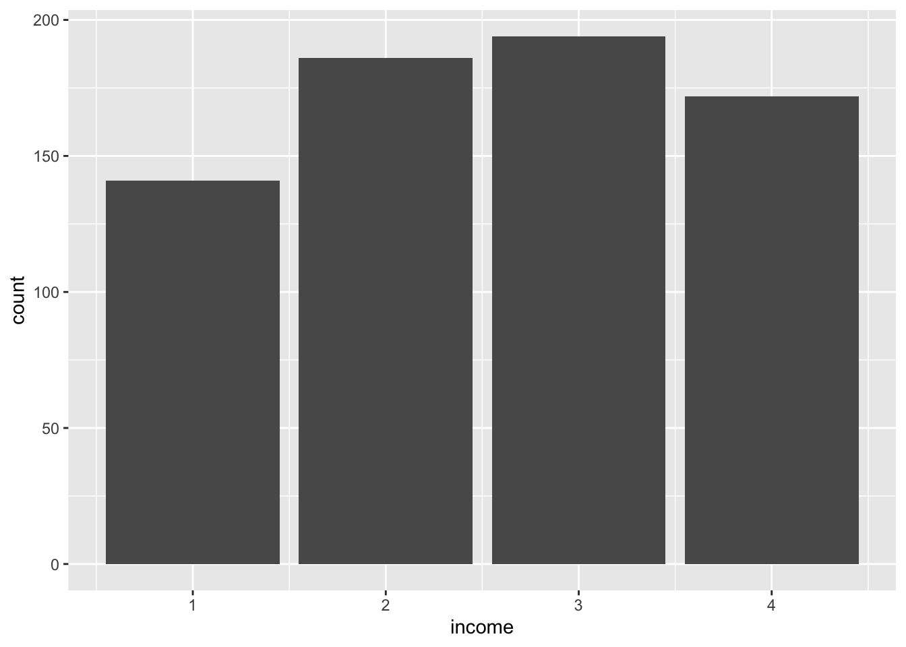
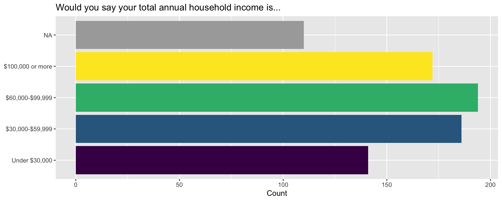
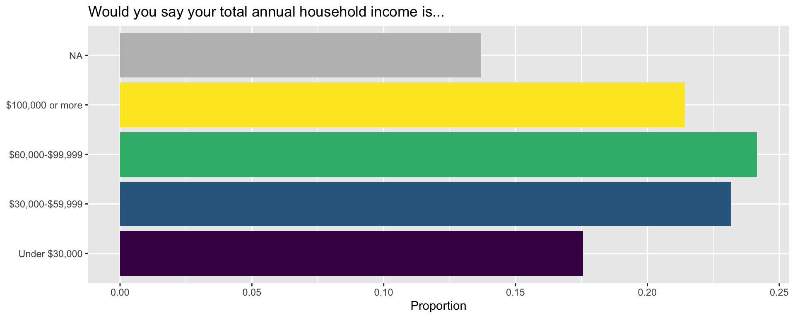
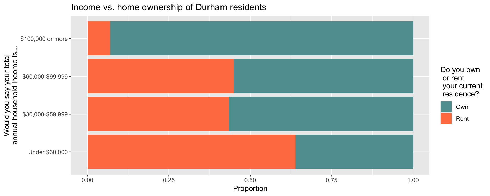

library(tidyverse)AE-03: 2020 Durham City and County Resident Survey
Application exercise
This application exercise uses data from a survey administered by the city of Durham, N.C.
The main question we’ll explore today is “What are the demographics and priorities of City of Durham residents?”
Goals
- Getting familiar with survey data
- Visualizing and summarizing categorical data
- Exploring relationships between categorical variables
- Improving visualizations for visual appeal and better communication
- Understand marginal distribution
- Understand conditional distribution
Packages
Data
The data for this case study come from the 2020 Durham City and County Resident Survey.
First, let’s load the data and assign it a name:
durham <- read_csv("durham-2020.csv")1 Visualizing categorical data
Exercise 1
How many rows and columns are in this dataset? Answer in a full sentence using inline code. (Hint: we learned how to do this in last week’s AE). What does each row represent and what does each column represent?
Exercise 2
There are lots of variables in this data set, but we’ll focus on the three listed below. Sometimes the variable names in the data frame are awkward to work with, so one thing we might want to do is rename the variables to something more manageable. In the table below, you’ll see the original variable name and a new updated name that we want to use.
| Original name | Updated name |
|---|---|
primary_language |
primary_language |
do_you_own_or_rent_your_current_resi_31 |
own_rent |
would_you_say_your_total_annual_hous_35 |
income |
We will need some R code to rename the variables. The code chunk below does this for second variable.
durham <- durham |>
rename(
own_rent = do_you_own_or_rent_your_current_resi_31
)Your turn! Add some code to this code chunk to rename the third variable.
# add code here
durham <- durham |>
rename(
income = would_you_say_your_total_annual_hous_35
)Exercise 3
The variable primary_language shows how repondents to the survey answered the question:
What is the primary language used in your household?
Add R code below to produce a bar graph which visualizes this variable.
# replace the blank with the approprate variable name
# then change eval: false to eval: true
ggplot(durham, aes(x = ___ )) +
geom_bar()Bonus task: use the example I showed you in class on Tuesday to add color! Take a look at this Rcolor cheatsheet to pick new colors!
Exercise 4
Make similar bar plots of own_rent and income.
# add code here
ggplot(durham, aes(x = income)) +
geom_bar()Warning: Removed 110 rows containing non-finite outside the scale range
(`stat_count()`).
Exercise 5
Although the variables own_rent and income are both categorical, they’re stored as numbers in the data frame. It is fairly common practice to “code” responses as numbers because it makes data collection and storage easier. To make sense of these numbers, however, we need to be able to translate back to a more meaningful response. This is typically done through documentation that would accompany the data. It can also be helpful to see the actual survey tool used to collect the data.
In R, categorical data are called factors. Here we recode these variables as factors with the as_factor() function.
durham <- durham |>
mutate(
income = as_factor(income))Now add additional code here to do the same for the own_rent variable:
# add code here
durham <- durham |>
mutate(
own_rent = as_factor(own_rent))The values for these variables still look like they’re numbers, but now R knows to treat them as categorical variables.
Exercise 6
Now let’s recreate the barplot for income, but now we’ll add some details to make it both visually more appealing and more effective at communicating information.
Challenge: take a look at this code chunk and make a guess about what each line is doing!
durham |>
ggplot(aes(y = income, fill = income)) +
geom_bar(show.legend = FALSE) +
scale_fill_viridis_d(na.value = "darkgray") +
scale_y_discrete(
labels = c(
"1" = "Under $30,000",
"2" = "$30,000-$59,999",
"3" = "$60,000-$99,999",
"4" = "$100,000 or more"
)
) +
labs(
x = "Count",
y = NULL,
title = "Would you say your total annual household income is..."
)
Exercise 7
As we know, it’s often helpful to think about catagorical variables in terms of proportions (relative frequencies) rather than counts. In AE-03, for example, we used R to compute proportions and display those values in a table. We can do the same thing here:
durham |>
count(income) |>
mutate(prop = n / sum(n))# A tibble: 5 × 3
income n prop
<fct> <int> <dbl>
1 1 141 0.176
2 2 186 0.232
3 3 194 0.242
4 4 172 0.214
5 <NA> 110 0.137We can also incorporate this code directly into our chunk that produces our bar chart!
The following code is the same as before, but we first calculate relative frequencies (proportions) of income (also known as the marginal distribution) and this is plotted instead.
durham |>
count(income) |>
mutate(prop = n / sum(n)) |>
ggplot(aes(y = income, x = prop, fill = income)) +
geom_col(show.legend = FALSE) +
scale_fill_viridis_d(na.value = "gray") +
scale_y_discrete(
labels = c(
"1" = "Under $30,000",
"2" = "$30,000-$59,999",
"3" = "$60,000-$99,999",
"4" = "$100,000 or more"
)
) +
labs(
x = "Proportion",
y = NULL,
title = "Would you say your total annual household income is..."
)
2 Visualizing relationships
Exercise 8
From Chapter 4 and in class, we saw that we can visualize multiple variables with a stacked bar chart. Here, we are looking for a possible relationship between income and home ownership of Durham residents.
durham |>
select(income, own_rent) |>
drop_na() |>
ggplot(aes(y = income, fill = own_rent)) +
geom_bar(position = "fill") +
scale_y_discrete(
labels = c(
"1" = "Under $30,000",
"2" = "$30,000-$59,999",
"3" = "$60,000-$99,999",
"4" = "$100,000 or more"
)
) +
scale_fill_manual(
values = c("1" = "cadetblue", "2" = "coral"),
labels = c("1" = "Own", "2" = "Rent")
) +
labs(
x = "Proportion",
y = "Would you say your total\nannual household income is...",
fill = "Do you own\n or rent\n your current\n residence?",
title = "Income vs. home ownership of Durham residents"
)
Exercise 9
While the bar chart can help us visualize relationships, we might also want to calculuate the precise proportions of home owners for each category of Durham residents. We did something similar in last week’s AE – the only difference here is that we are dropping any NA entries from our variables.
Since we are looking at proportions of a variable conditioned on the level of a different categorical variable, we call this a conditional distribution.
Finally, notice that we are also recodeing the levels of our two variables to be more informatively labeled.
durham |>
mutate(
income = case_when(
income == "1" ~ "Under $30,000",
income == "2" ~ "$30,000-$59,999",
income == "3" ~ "$60,000-$99,999",
income == "4" ~ "$100,000 or more"
),
own_rent = if_else(own_rent == 1, "Own", "Rent")
) |>
select(income, own_rent) |>
drop_na() |>
count(income, own_rent) |>
group_by(income) |>
mutate(prop = n / sum(n))# A tibble: 8 × 4
# Groups: income [4]
income own_rent n prop
<chr> <chr> <int> <dbl>
1 $100,000 or more Own 160 0.930
2 $100,000 or more Rent 12 0.0698
3 $30,000-$59,999 Own 105 0.565
4 $30,000-$59,999 Rent 81 0.435
5 $60,000-$99,999 Own 107 0.552
6 $60,000-$99,999 Rent 87 0.448
7 Under $30,000 Own 51 0.362
8 Under $30,000 Rent 90 0.638 3 Appendix
R code used
Here is list of R commands used in this application exercise:
- Reviewed data imports, visualization, and wrangling functions encountered before:
- Import:
read_csv(): Read data from a CSV (comma separated values) file - Visualization:
ggplot(): Create a plot using the ggplot2 packageaes(): Map variables from the data to aesthetic elements of the plot, generally passed as an argument toggplot()or togeom_*()functions (define onlyxoryaesthetic)geom_bar(): Represent data with bars, after calculating heights of bars under the hoodlabs(): Labelxaxis,yaxis, legend forcolorof plot, title` of plot, etc.
- Wrangling:
mutate(): Mutate the data frame by creating a new column or overwriting one of the existing columnscount(): Count the number of observations for each level of a categorical variable (factor) or each distinct value of any other type of variablegroup_by(): Perform each subsequent action once per each group of the variable, where groups can be defined based on the levels of one or more variables
- Import:
- Introduced new data wrangling functions:
rename(): Rename columns in a data frameas_factor(): Convert a variable to a factordrop_na(): Drop rows that haveNAin one ore more specified variablesif_else(): Write logic for what happens if a condition is true and what happens if it’s notcase_when(): Write a generalizedif_else()logic for more than one codition
- Introduced new data visualization functions:
geom_col(): Represent data with bars (columns), for heights that have already been calculated (must definexandyaesthetics)scale_fill_viridis_d(): Customize the discretefillscale, using a color-blind friendly, ordinal discrete color scalescale_y_discrete(): Customize the discreteyscalescale_fill_manual(): Customize thefillscale by manually adjusting values for colors
Acknowledgements
This AE is based on a similar activity written by Mine Çetinkaya-Rundel. The dataset was cleaned and prepared for analysis by Sam Rosen.